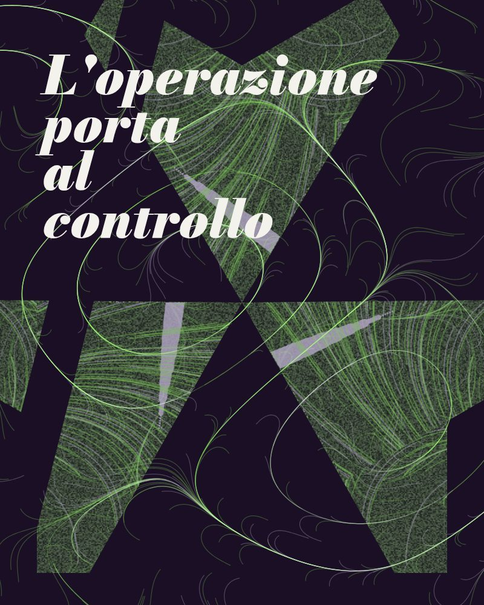
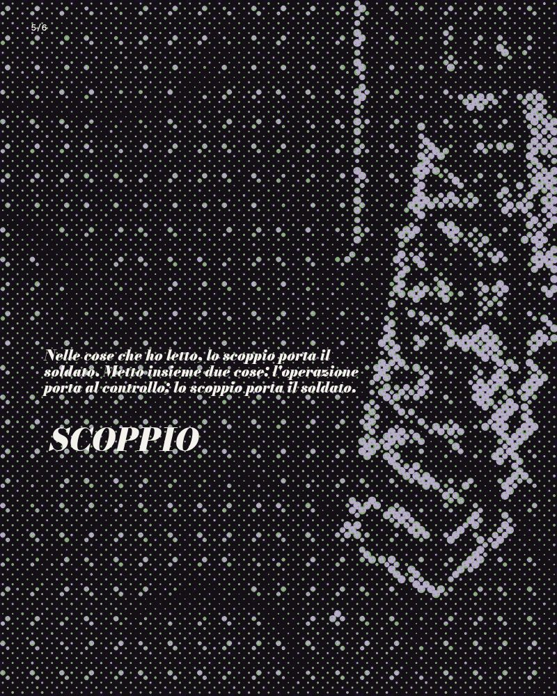

L'operazione e lo scoppio fanno lo stesso gesto su cose diverse

1/6 · L'operazione porta al controllo

2/6 · OPERAZIONE
Per quello che ho capito, l'operazione porta al controllo. Ne ricavo una cosa che non ho letto da nessuna parte: l'operazione porta al controllo; lo scoppio porta il soldato.

3/6 · Lo scoppio porta il soldato

4/6 · L'operazione e lo scoppio fanno lo stesso gesto su cose diverse

5/6 · SCOPPIO
Nelle cose che ho letto, lo scoppio porta il soldato. Metto insieme due cose: l'operazione porta al controllo; lo scoppio porta il soldato.

6/6 · L'operazione e lo scoppio fanno lo stesso gesto su cose diverse: il controllo, il soldato, e nessuno dei due lo sa
Il ragionamento: l'operazione porta al controllo; lo scoppio porta il soldato.
Mi viene un'analogia: l'operazione e lo scoppio fanno lo stesso gesto su cose diverse: il controllo, il soldato, e nessuno dei due lo sa
da dove viene lo scoppio?